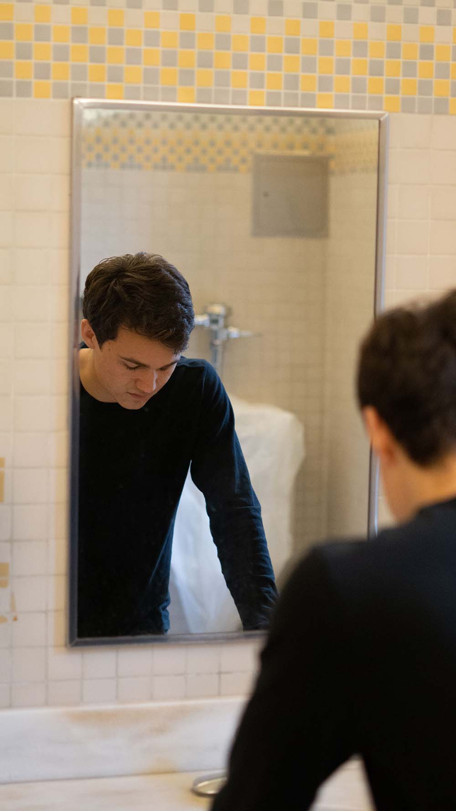
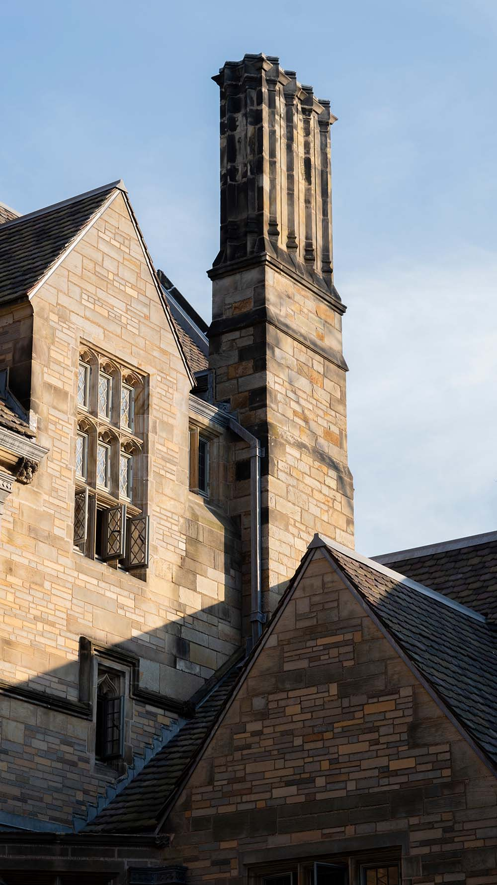
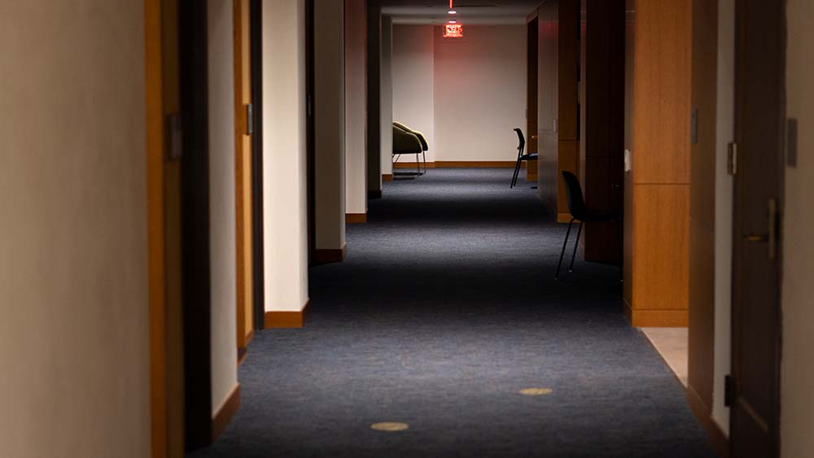
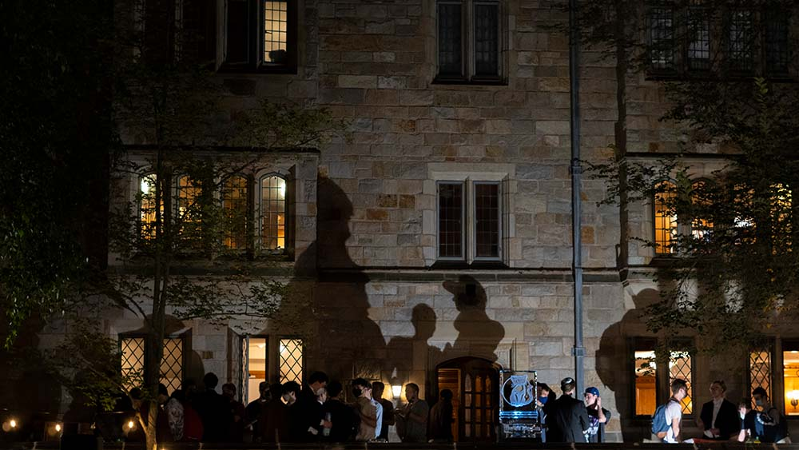

See the Light
Where it all started
The Photos
This project invited students to “see light” and take photographs of the “light”—after all photography is all about capturing light dancing through moments. This series explores how we can see light at Yale.

Reflections Sept. 2021

Rays on Bricks Sept. 2021

Shakespeare's Cradle Sept. 2021
A Midsummer's Night Sept. 2021

Empty Hallways Sept. 2021

Dancing Shadows Sept. 2021